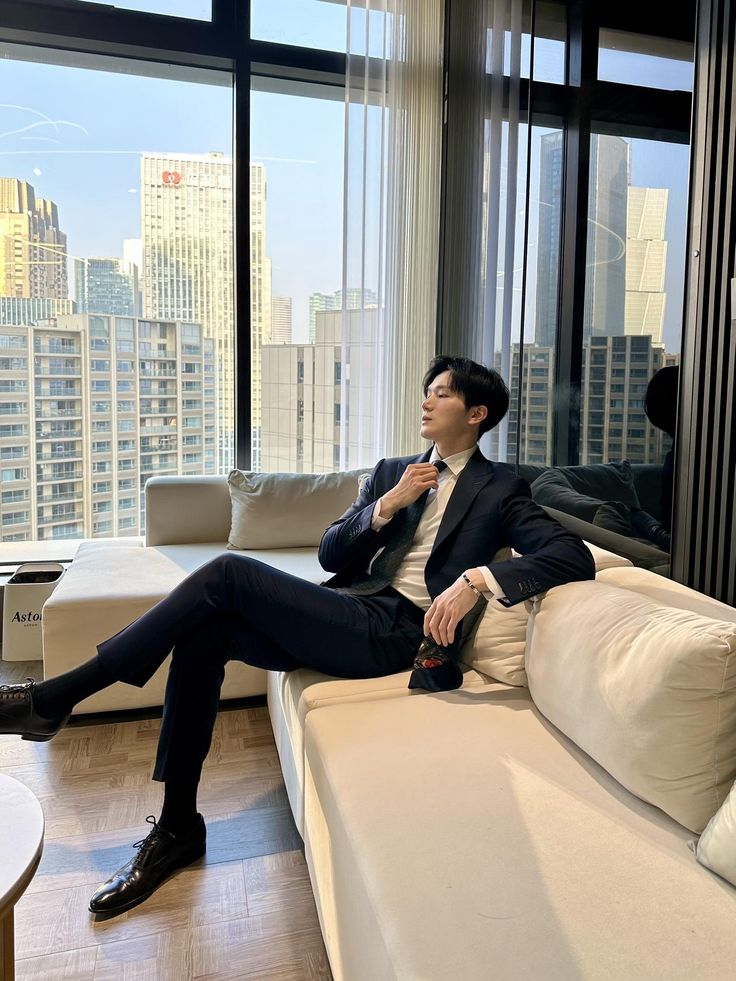
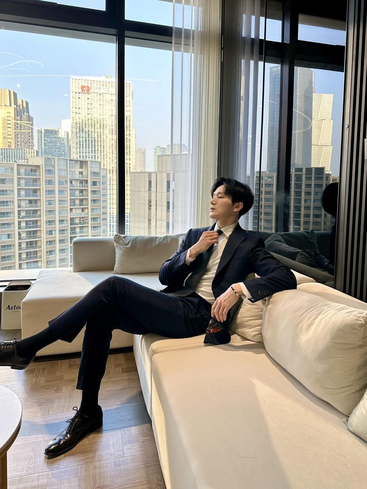
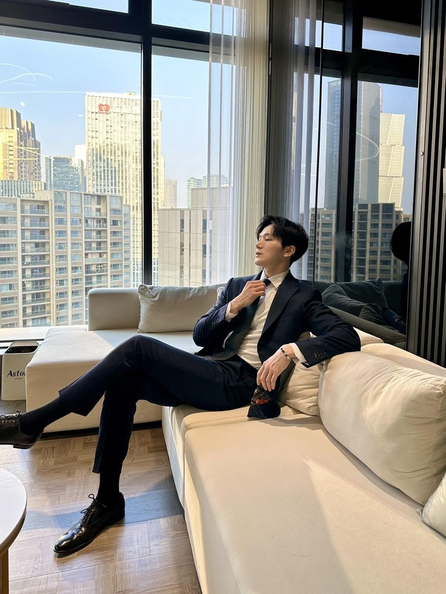

TRAYECTORIA ÚNICA

 

Un legado en construcción La trayectoria de un visionario
A lo largo de su carrera, Muzan Kibutsuji ha dejado una huella imborrable en la industria de la moda. Sus colaboraciones con diseñadores de renombre como Karl Lagerfeld y Marc Jacobs han dado como resultado campañas publicitarias icónicas que han marcado tendencia.
Además, ha trabajado con las modelos más cotizadas de la actualidad, capturando su belleza y personalidad de una manera única. Sus editoriales de moda para revistas como Vogue, Elle y Harper's Bazaar son un testimonio de su talento y creatividad.
Desde Nagoya al mundo: El ascenso de un fotógrafo icónico

2007-2014: Los inicios en Japón
- 2007: Primera exposición individual en una pequeña galería de arte en Nagoya
- 2009: Participación en el Tokyo Youth Photography Festival
- 2012: Colaboración con diseñadores emergentes en la Semana de la Moda de Tokio
2015-2019: El salto a la escena internacional
- 2015: Primera exposición individual en Nueva York, recibiendo excelentes críticas de la prensa especializada.
- 2016: Ganador del premio "Fotógrafo del Año" en los International Photography Awards
- 2017: Colaboración con Vogue Italia para una serie de editoriales de moda.
- 2018: Participación en el Festival de Cannes, documentando los eventos más exclusivos.
2020-Presente: Consolidando su legado
- 2020: Exposición retrospectiva en el Centro de Fotografía de París.
- 2021: Juez en el concurso de fotografía de belleza "Miss Universe"
- 2022: Colaboración con marcas de lujo como Chanel y Dior para campañas publicitarias a nivel mundial.
- 2023: Publicación de su primer libro de fotografía, "Visiones de Belleza".